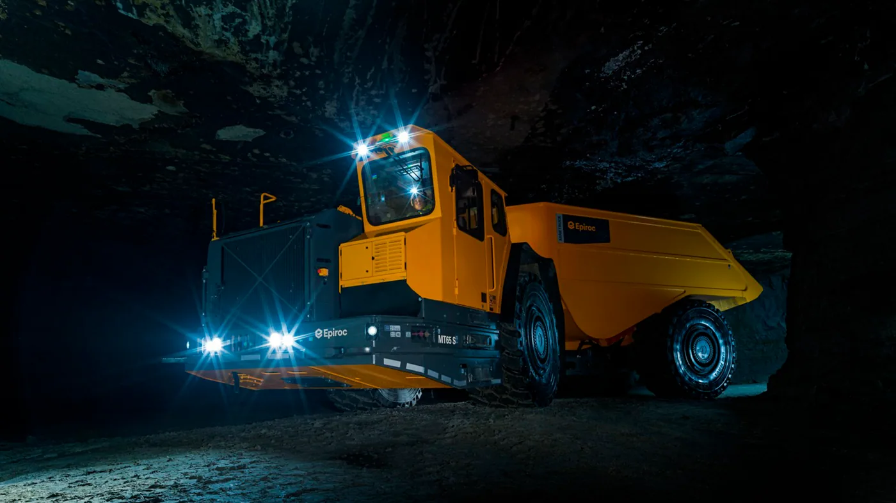

Epiroc anunció el 3 de septiembre de 2026 una ampliación de Deep Automation para que sus camiones mineros autónomos puedan pasar de galerías subterráneas a zonas de superficie dentro de un mismo sistema. La propuesta utiliza LiDAR 3D para localizar el vehículo, construir referencias del entorno y detectar obstáculos.
La empresa busca abarcar ciclos de acarreo y descarga que no terminan bajo tierra. Como antecedente, menciona una demostración realizada durante Epiroc World Expo en junio de 2026, con un camión minero a batería que detectó obstáculos y se detuvo. Esa exhibición no ocurrió esta semana: la novedad actual es el anuncio de la ampliación tecnológica.
El fabricante explica que la superficie presenta menos referencias para la localización y condiciones ambientales variables. El comunicado no confirma una instalación en Argentina ni publica un resultado cuantificado de reducción de accidentes. Tampoco anuncia conducción autónoma en rutas públicas.
Un mismo recorrido, dos entornos diferentes
Análisis de Zabala Repuestos. Para entender el interés de esta noticia conviene pensar en el trabajo completo del vehículo. El material debe llegar desde su punto de carga hasta el lugar de descarga, y el cambio de entorno puede exigir coordinación entre equipos, personas y sistemas.
Una solución integrada puede estudiarse precisamente en esas transiciones. Pero que una tecnología permita ampliar el recorrido no significa que cualquier explotación esté preparada para incorporarla. Antes de evaluar productividad, corresponde definir dónde podría operar y bajo qué condiciones verificadas.
No es lo mismo una mina que una ruta
Un circuito industrial puede organizar accesos, zonas de trabajo y procedimientos específicos. En cambio, el tránsito público reúne usuarios y situaciones que una operación minera no controla. Por eso, un avance en acarreo autónomo no debe leerse como autorización para retirar conductores del transporte carretero.
Para un proyecto argentino, la primera conversación debería involucrar al operador del sitio, al fabricante y a los responsables técnicos y de seguridad. El punto de partida es la aplicación concreta, no una comparación genérica entre camiones con conductor y sin conductor.

El mantenimiento también debe contemplar los sensores
Agregar automatización no elimina la necesidad de mantener el vehículo ni convierte a todos sus componentes en intercambiables. La planificación debería reunir el mantenimiento mecánico con las inspecciones y verificaciones que especifique el proveedor del sistema automatizado.
Para el taller importa saber quién puede intervenir, qué documentación necesita y cómo se comprueba que la unidad está lista para regresar al servicio. Cambiar una pieza y borrar una advertencia no equivale, por sí solo, a validar el funcionamiento del conjunto.
Qué debería medir una prueba piloto
Una evaluación útil necesita objetivos acordados antes de comenzar. Conviene registrar ciclos completados, interrupciones, causas de detención y tiempo de recuperación, siempre dentro del procedimiento de seguridad aprobado para el sitio. El resultado debe explicar tanto los avances como las limitaciones observadas.
También hay que describir las condiciones de la prueba. Un recorrido estable durante pocas jornadas no demuestra el mismo desempeño con otra carga, diferente organización o cambios del entorno. Documentar esas diferencias permite decidir qué evidencia falta antes de ampliar la operación.
Las personas siguen formando parte del sistema
Automatizar una tarea modifica responsabilidades. Se necesita definir quién supervisa, quién recibe las alertas, quién autoriza una intervención y cómo se informa un cambio en el circuito. Esa organización merece tanta atención como las prestaciones del equipo.
La capacitación debería incluir situaciones normales y excepcionales, respetando siempre las instrucciones del fabricante. Un proyecto no queda completo con la entrega del camión: también necesita procedimientos comprensibles para operadores, mantenimiento y personal que comparte el lugar de trabajo.
Preguntas antes de avanzar
- ¿Qué modelos y configuraciones están contemplados en la oferta?
- ¿Qué condiciones del sitio deben verificarse?
- ¿Qué asistencia existe para diagnóstico y mantenimiento?
- ¿Cómo se registran las interrupciones y su resolución?
- ¿Qué formación recibe cada función de la operación?
- ¿Qué evidencia permitirá aceptar o descartar el piloto?
La noticia muestra una dirección concreta: estudiar el transporte minero como un recorrido continuo, no como segmentos aislados. Para los lectores argentinos, lo valioso es seguir esa evolución con preguntas precisas sobre aplicación, respaldo y resultados, sin confundir una capacidad anunciada con una solución ya disponible en cada explotación.